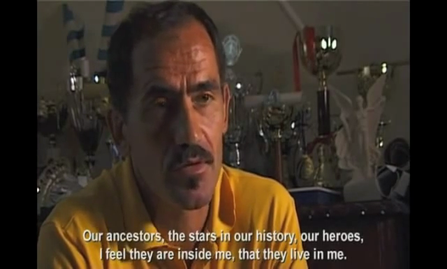

Great runners of all time, by Runners World.
When you're running more than 12 hours you're a unique human being.
The verb "endure" is not a physical verb, it's a spiritual one. [...] the misfortune with the ultrarunners is that our sport is yet to be recognised as an Olympic one.
El ritmo con el que empieza el documental es el de la fricción de las piernas entre sí y el del zapateo contra el suelo. Produce una sensación de continuidad y de permanencia que suena enviciante y hasta hipnótico. La personalidad de Yiannis no es exagerada en apariencia, simplemente explica que su infancia fue dura porque su padre no lo reconoció como hijo y se refugio en el atletismo porque no quería volver a su casa.
Cuando relata sus hazañas explica que siempre avanzó en condiciones de dificultad. Cuando entrenaba en los ochenta hacía su casa (como albañil?) y entrenaba lo que podía y en esa década marcó récords todavía sin romper. Cuando explica sus tiempos de descanso de cada día hace lo inédito de dormir cantidades bajísimas. Acá probablemente hay un tema novedoso que excede lo hasta ahora visto: ¿por qué el hombre necesita, o no, dormir? ¿Qué hábitos físicos, mentales, o espirituales están implicados en la necesidad de sueño?
Cuando estaba estudiando por 4 ó 5 años dormía media hora por día. Durante los últmos 20 años, como estaba construyendo mi casa, y como hago deporte que me mantiene constantemente ocupado, en promedio duermo unas 2,5 hs por día. Digo que, Dios lo prohíba, a un miembro de la familia le toca ir al hospital, ¿no nos quedaríamos levantados? ¿Por qué es eso? Porque lo que hacemos es importante... Así es como veo todas mis carreras. Los veo como oportunidades excepcionales, que no se van a repetir
Este atleta también buscó inspiración en la música, canta, y leyó Kazantzakis por las ideas de éxtasis y exceso.
En lo que hace a la vida familiar se casó con una mujer polaca que vivió y aprendió el griego. Pero Yiannis no ve futuro para su familia en Grecia. Pobreza excede los países, sino que el deporte en general, el atletismo, y sobretodo el ultra es un rubro en el que no se depositan enormes cantidades de plata. Esto es una fija. Y el tema central del ultra va más allá del reconocimiento, o de un entrenamiento del cuerpo:
Algunos atletas rusos, ingleses, y franceses que idolatran el cuerpo; simplement corren todo el día. Si yo hiciera esto me volvería inhumano y no encontraría inspiración en una carrera. Practico algunas horas por la mañana y la noche con muchos descansos. Un campeón francés practica tres veces al día, todos los días. ¿Dónde está el tiempo para otra cosa? Para algo espiritual? Los rusos practican continuamente, entonces no son personas espirituales.
Carrera de Sidney-Melbourne. Algo inédito. Como ganó un año con diferencia de más de 24 horas, al año siguiente lo hicieron arrancar 12 horas después que el pelotón. Hizo 1000 K en 5 días y pico.
Las rodillas son el peor problema para el ultramaratonista.
Kouros ve que muchos periodistas hablan de sus récords imbatibles por 20 años. Piensa que si alguien los rompe va a ser un asiático, japonés o chino, porque ven el exceso como algo más que meramente corporal.
El malestar del ultra es no ser todavía reconocido como deporte olímpico.
La sensación buena que me deja el griego Yiannis que no es todo sobre lo material, que el espíritu también cuenta, el propio y el de los antepasados. Me hace pensar en el peso de las ideas, como la gran novela gráfica Promethea, de Alan Moore. También se aparta de Scott Jurek en el sentido de que no se resume todo a Eat & Run , que es el título del libro del yanqui.
Curiosamente Jurek menciona la importancia de la comida cruda, que sería como un PhD porque difícil para cualquiera de sostener pero valioso conocer la información. Y de ahí conseguí el libro Raw Power, de Thor Bazler, que sugiere no arrebatarse ciegamente con cualquier comida en general y simplemente estar bien hidratado ... con frutas frescas y no solamente con agua. A lo sumo uno puede comer como hacer pesas: muchas repeticiones livianas para adelgazar y marcarse, y pocas repeticiones pesadas para subir como los luchadores de sumo, que ayunan todo el día y se van a dormir con un empacho.